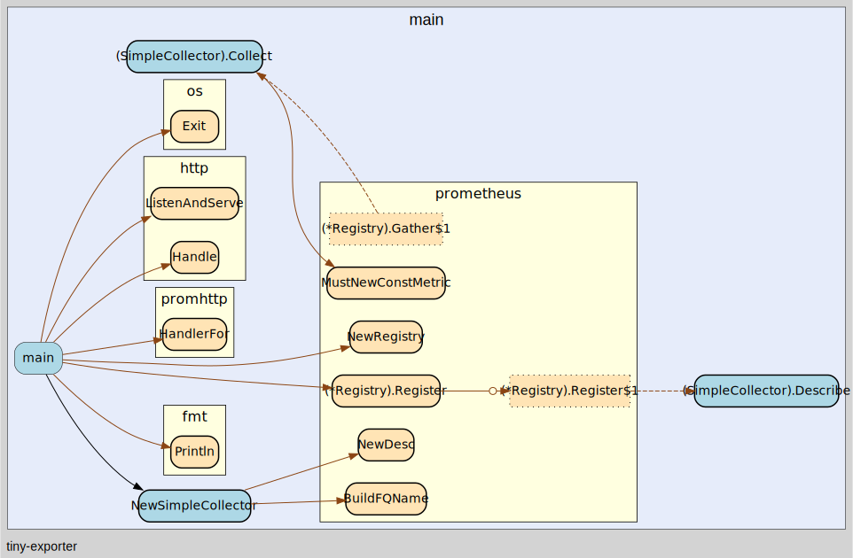

Exporter
Simple Exporter
// collector.go
type SimpleCollector{}
var simpleDesc = prometheus.NewDesc(
prometheus.BuildFQName("demo", "foo", "bar"),
"Simple collector",
[]string{"lable_foo"}, nil,
)
func (s SimpleCollector) Describe(ch chan<- *prometheus.Desc) {
ch <- simpleDesc
}
func (s SimpleCollector) Collect(ch chan<- prometheus.Metric) {
ch <- prometheus.MustNewConstMetric(
simpleDesc,
prometheus.CounterValue,
1,
"value_foo",
)
}
// main.go
func main() {
// 创建 prometheus registry，用来注册 Collector
rg := prometheus.NewRegistry()
rg.MustRegister(SimpleCollector{})
// 创建 promHandler, 用来处理 metrics 请求
promHandler := promhttp.HandlerFor(
rg,
promhttp.HandlerOpts{
ErrorLog: logger,
MaxRequestsInFlight: maxRequests,
},
http.Handle("/metrics", promHandler)
server := &http.Server{Addr: ":9900"}
if err := server.ListenAndServe(); err != nil {
os.Exit(1)
}
)
}

基本范式
- 编写Collector实现
prometheus.Collector接口 - 使用
promethues.MustRegister()方法将Collector注册到prometheus registry中 - 创建 server, 并添加
promhttp.Handler()方法 - 每次请求会在
promHandler中进行处理，简单而言，handler 中会首先创建几个管道，用来保存一些metric/desc数据，然后调用registry中所有Collector的Describe,Collect方法来获取指标相关的信息，并最后将其序列化返回
使用promhttp.Handler作为采集入口时，会额外地采集请求处理过程中的性能数据，如果要关闭这些数据，可以使用promhttp.HandlerFor作为替换oo
rg := prometheus.NewRegistry()
rg.MustRegister(serverCollector)
http.Handle(metricsPath, promhttp.HandlerFor(rg, promhttp.HandlerOpts{ErrorLog: logger}))